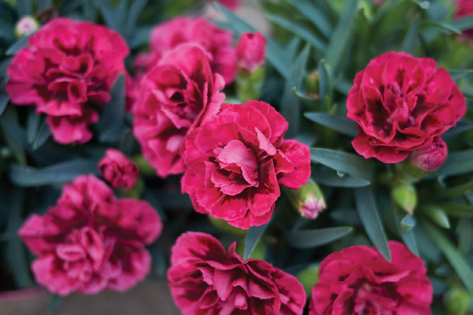
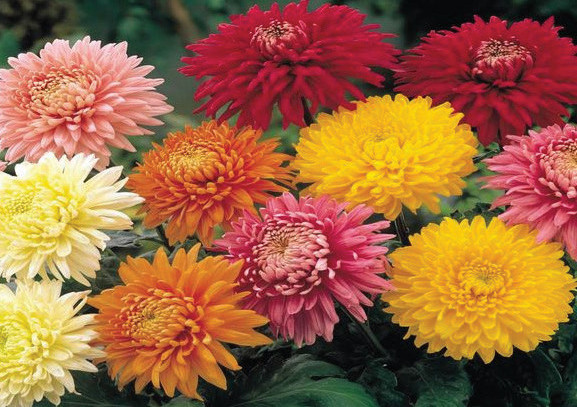
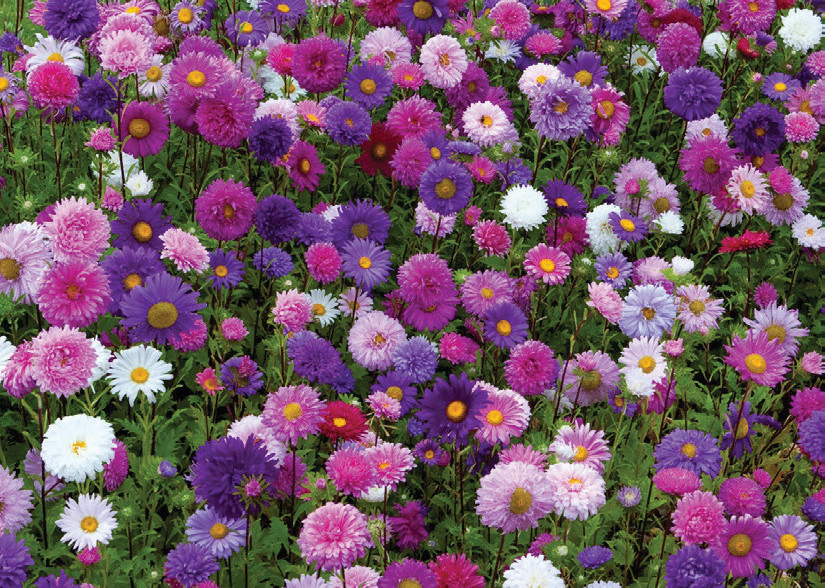
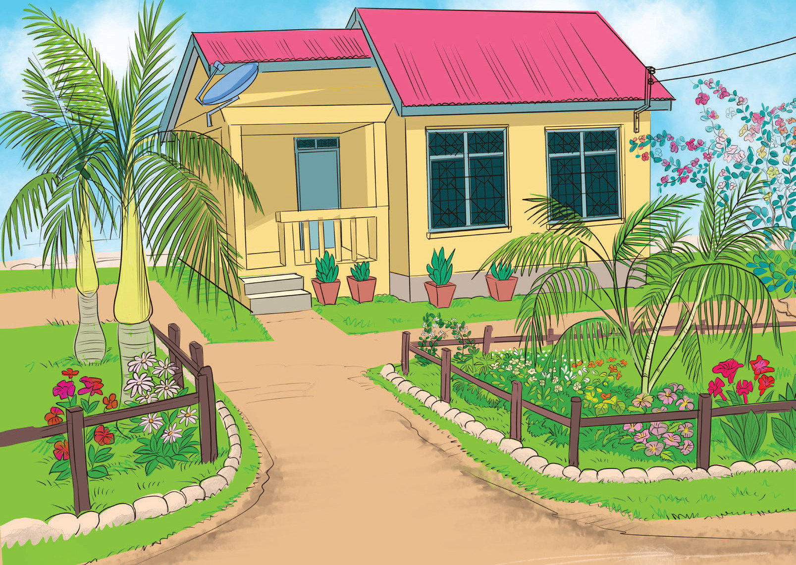

Ornamental crops
These are crops that are grown for decorative purposes in garden landscapes and various occasions. Ornamental crops beautify the environment with their peculiar features such as flowers, leaves, stems or pleasant natural smell. Ornamental crops are sometimes used as houseplants, cut flowers and specimen displays. Some ornamental crops are shown in Figures 3.66 to 3.70.



